시공사례
블로그에 올린 현장을 공사 과정 사진과 함께 소개합니다. 사진을 누르면 크게 볼 수 있습니다.
성남
성남공익활동지원센터 실내 공사
상가 층 하나를 새로 나누고 마감한 실내 공사입니다. 경량철골 스터드로 칸막이벽을 세우고 벽과 천장을 석고보드로 마감한 뒤, 노출 천장 스프레이 도장과 창가 목재 계단식 좌석까지 시공했습니다.
공사 내용
- 경량철골 칸막이벽
- 석고보드 벽·천장
- 천장 스프레이 도장
- 목재 계단식 좌석
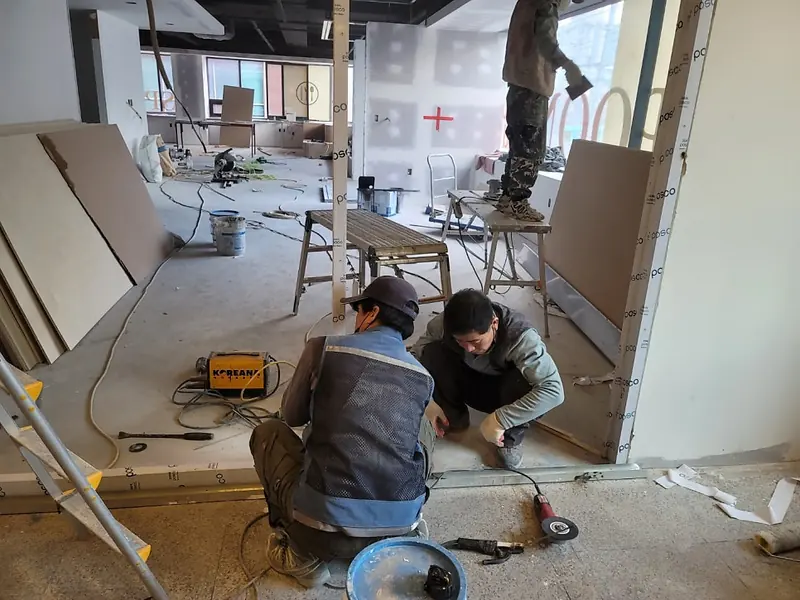
가벽 바닥 러너 설치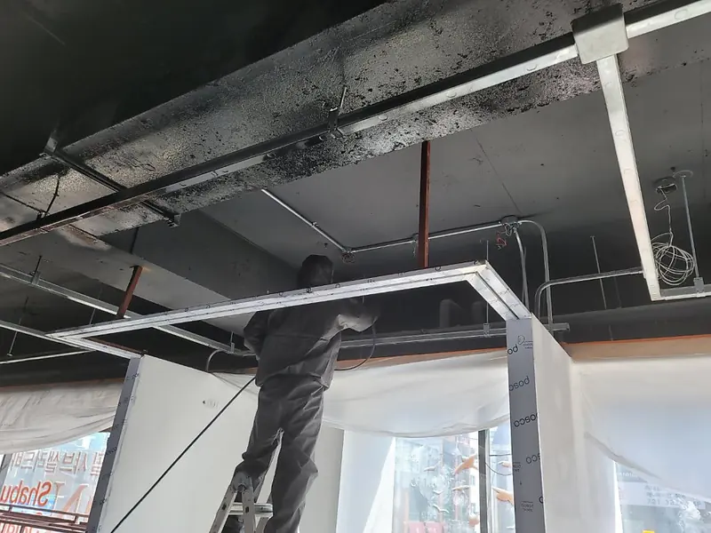
천장 단 골조 설치 스테인리스 문틀 설치
스테인리스 문틀 설치 석고보드 이음매 퍼티 작업
석고보드 이음매 퍼티 작업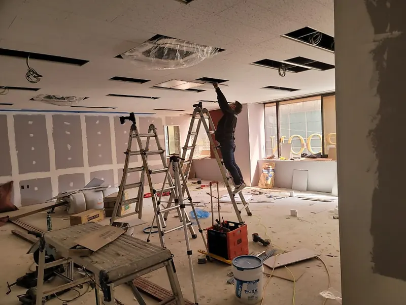
천장 마감 작업 퍼티를 마친 천장 단과 벽
퍼티를 마친 천장 단과 벽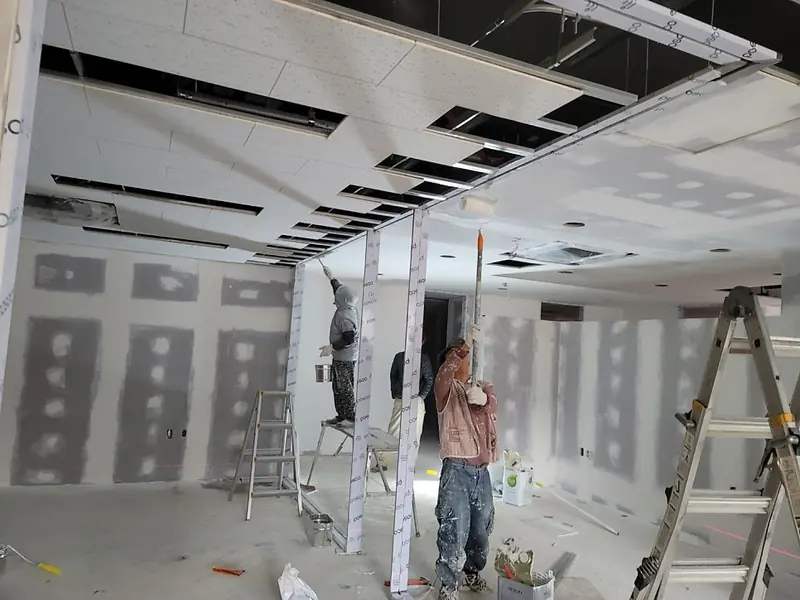
천장 단 도장 작업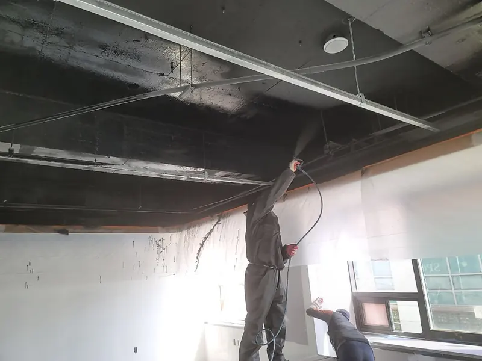
노출 천장 스프레이 도장 목재 계단식 좌석
목재 계단식 좌석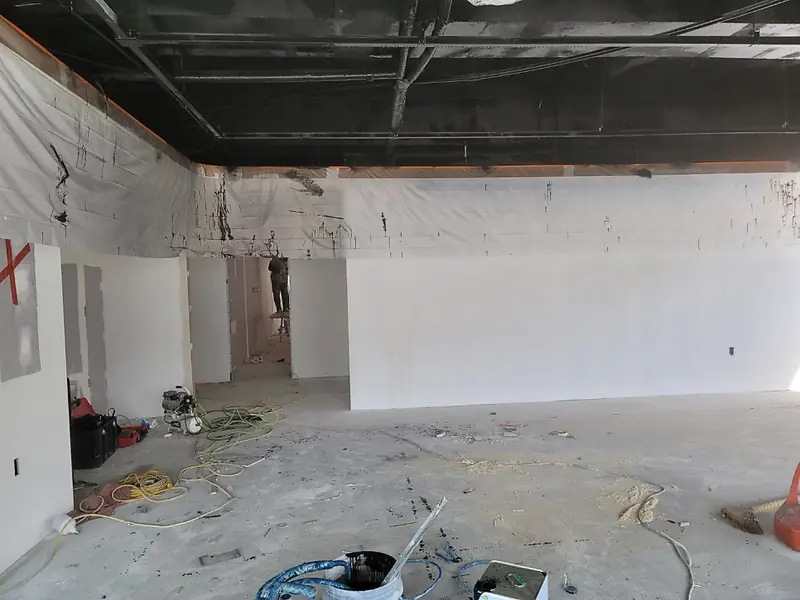
마감을 마친 칸막이벽


수원
수원 학원 칸막이 가벽·천장 보수공사
상가 건물에 들어서는 학원의 강의실을 나눈 공사입니다. 손상된 천장 텍스와 뼈대를 먼저 보강하고, 레이저 수평기로 가벽 골조를 세운 뒤 방염·준불연 석고보드를 2겹 교차로 붙였습니다. 스프링클러와 감지기 거리를 확보해 소방 기준에 맞췄습니다.
공사 내용
- 천장 텍스·뼈대 보강
- 골조 전 CD관·전기 배선 정리
- 방염·준불연 석고보드 2겹 교차 시공
- 퍼티, 몰딩, 코킹 마감
 천장 골조와 레이저 수평기
천장 골조와 레이저 수평기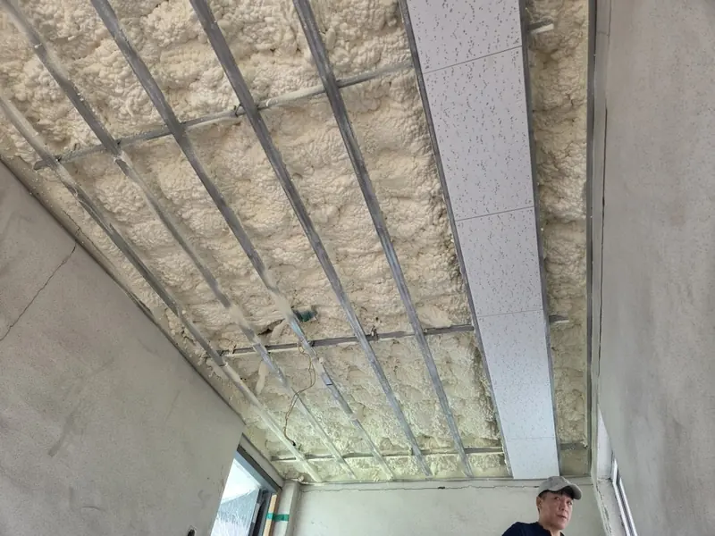
천장 골조 사이 단열재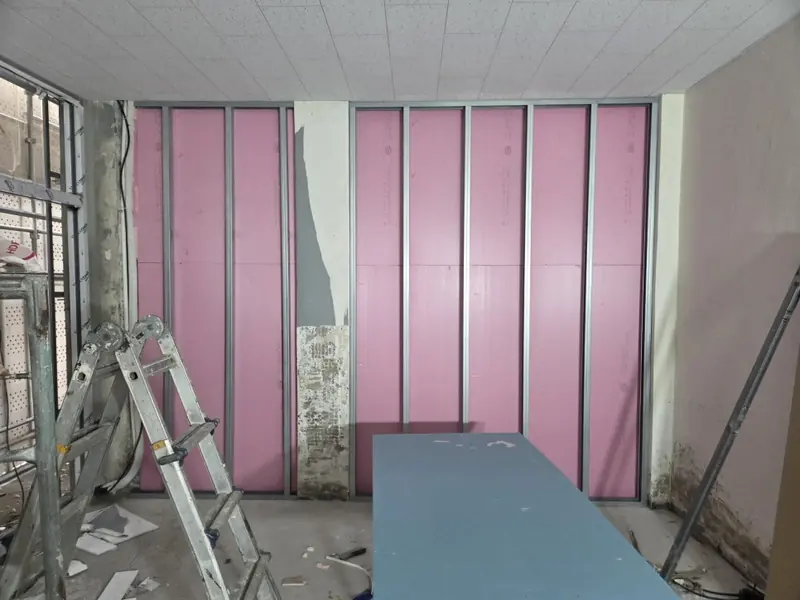
가벽 골조와 보드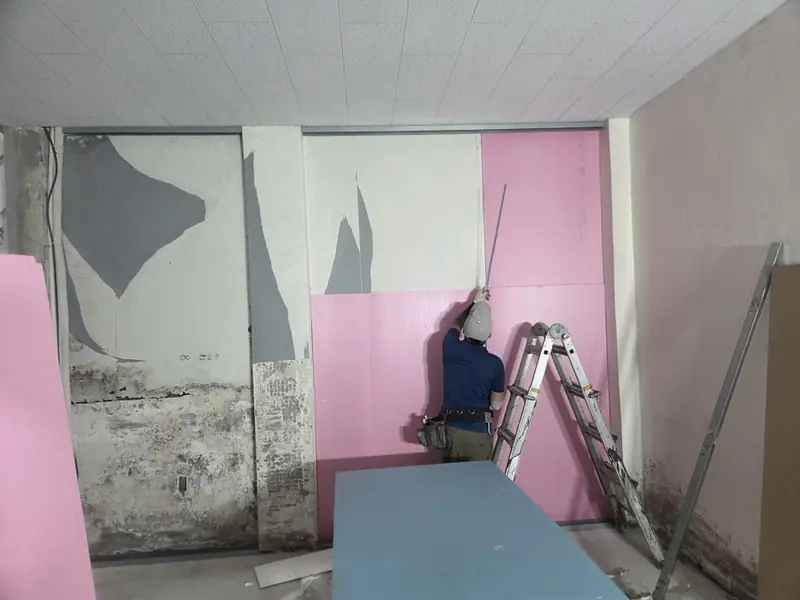
가벽 보드 붙이기 보드 시공을 마친 가벽
보드 시공을 마친 가벽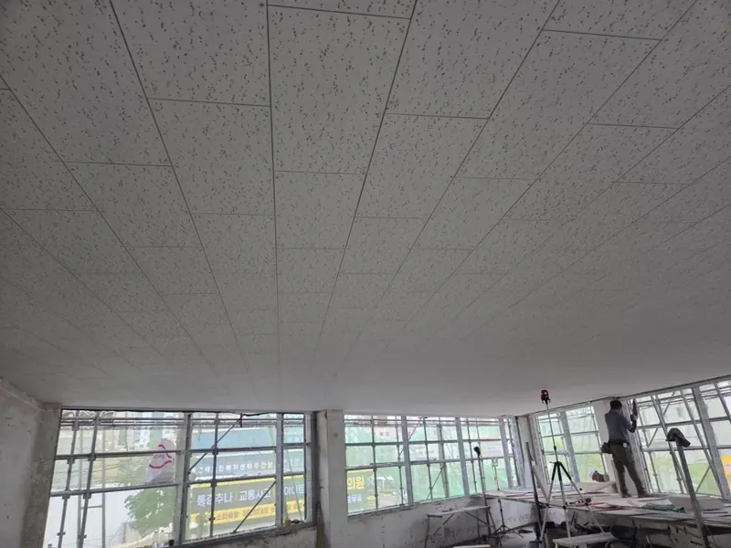
천장 텍스 시공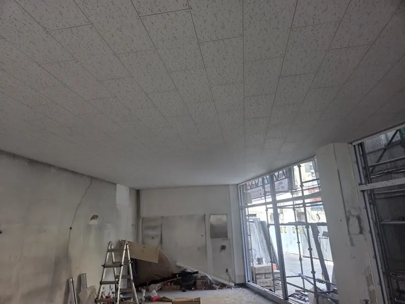
텍스 마감을 마친 천장 천장 텍스 시공을 마친 현장
천장 텍스 시공을 마친 현장


정자동
정자동 상가 칸막이 공사 (래핑 가벽)
입주를 앞둔 학원·사무실을 래핑 가벽으로 원장실, 상담실, 학습 공간으로 나눴습니다. 표면에 필름이 입혀진 판넬이라 도배나 페인트 공정 없이 바로 마감되어 공사 기간을 줄였습니다.
공사 내용
- 먹줄 레이아웃
- 레이저 수평기로 아연 스터드 골조
- 래핑 판넬 재단·밀착 고정
- 문틀 개구부와 래핑 문틀·도어
- 몰딩, 실리콘 코킹 마감
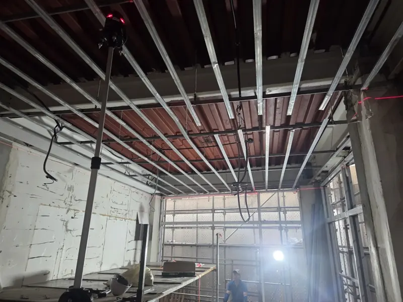
천장 골조와 레이저 수평기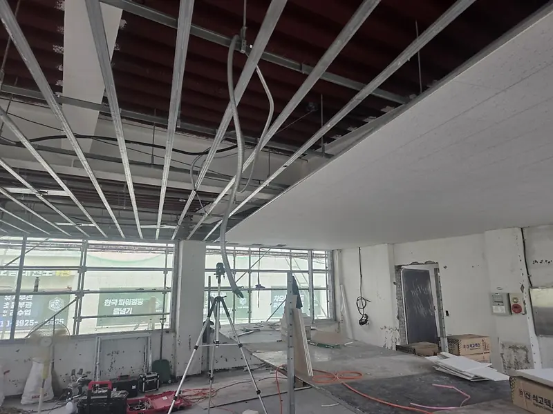
천장 골조와 텍스 마감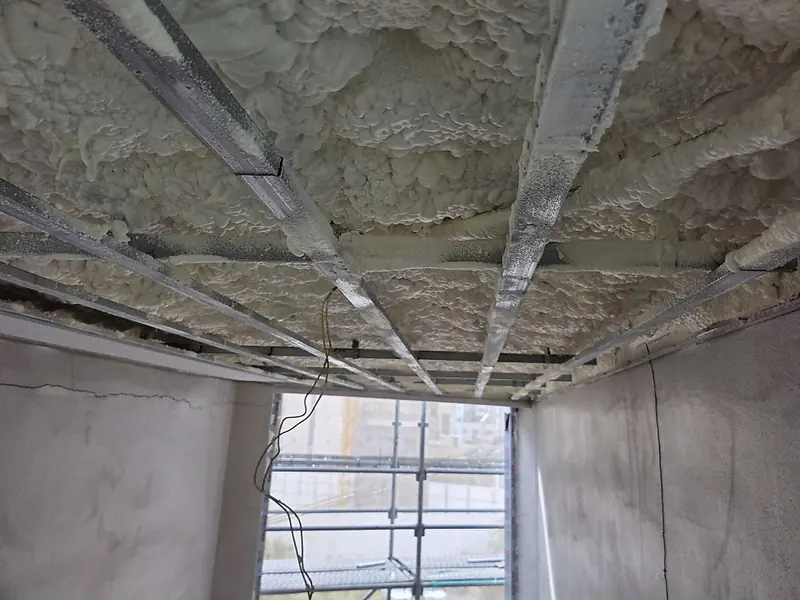
천장 골조 사이 단열재 천장 골조와 마감 천장
천장 골조와 마감 천장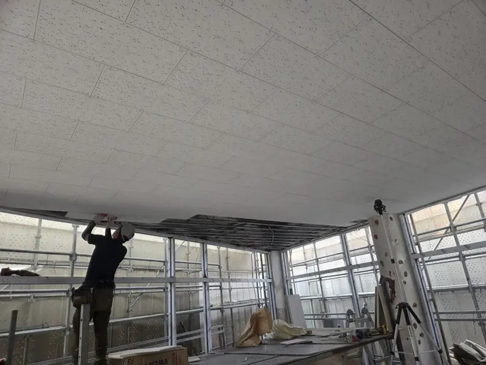
천장 텍스 시공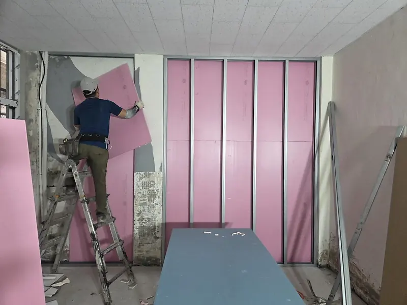
가벽 보드 붙이기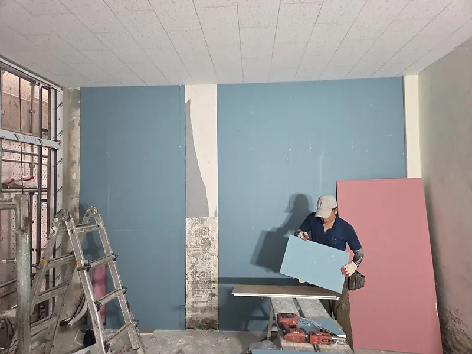
가벽 보드 재단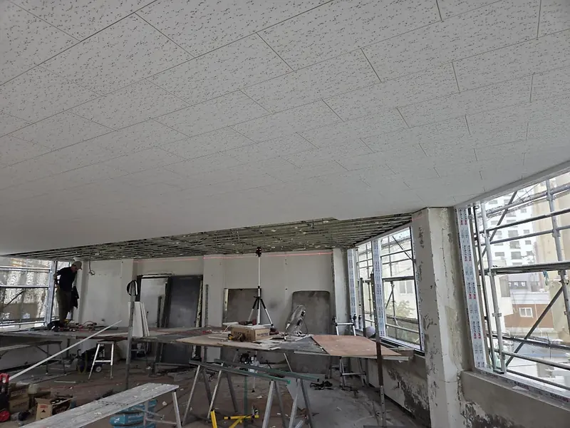
천장 마감을 마친 현장 천장 마감을 마친 창가
천장 마감을 마친 창가


더 많은 현장은 블로그에 올리고 있습니다.
블로그에서 더 보기공사할 공간이 있다면 알려 주세요
현장 위치와 공사 종류, 원하는 일정을 남겨 주시면 확인 후 연락드립니다.